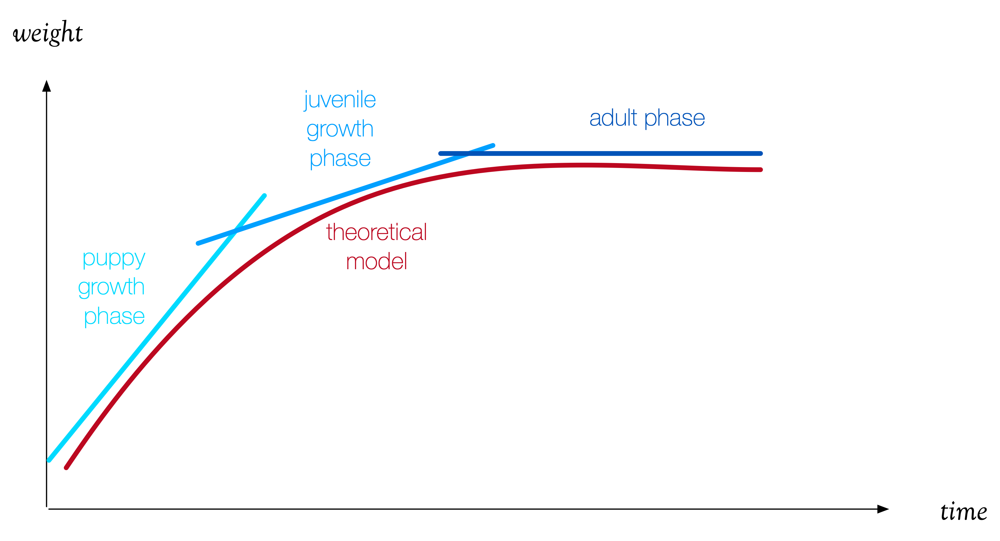

Review of Week 1 and Week 2¶
We are off to a good start. During the first two weeks of the course we reviewed some basic concepts in data analysis. We begun with a simple data analysis example to discuss data fit models, and then we moved on to reviewing the capabilities and utilities of the Anaconda tools. In the process you had a chance to assess your math skills for the course, learn how spreadsheets can sometimes provide insight into data analysis, and to begin using Jupyter Notebooks for data analysis.
The plan for the third week of the course to focus on the visualization utilities that are available for Python. This is based on the assumption that everyone has access to Anaconda and Jupyter book. This can be done in three ways: direct installation of the Anaconda distribution on your own computer; use of a virtual machine accessible via a web browser; or use of campus computers available at the Information Commons and in Crown 103/105 when the rooms are available.
Simple data fit models¶
{kind=link}
We started with a simple example, looking at the weight measurements during the first 500 days of a puppy’s life.
These measurements document a growth from 6 lbs to a near-adult weight of 41 lbs. In the early weeks of the dogs life, the growth is fast: she is gaining about a pound a week. Then the growth slows down and eventually levels off at 41 lbs.
The three distinct phases of growth can be approximated with linear models, like so:
where \(w(t)\) is the dog’s weight at time \(t\), \(w_b\) is the weight at birth, \(w_j\) is the starting juvenile weight, and \(w_a\) is the adult weight.
This three-stage model is problematic for at least two reasons. First, it requires clear boundaries between juvenile and adult phases. And second, it assumes abrupt changes in the growth pattern, which is not what happens in reality.
Three models are better than none, but one model is always better. A smooth continuous model often provides a better narrative. We found that such a model exists in the form
where \(c\) is a time-scaling coefficient, and \(e\) is, of course, the basis of natural logarithms.
But even this smooth model is problematic. Models help up predict the future – at least in the short term. This model presupposes knowledge of the future, i.e., it requires a value for the dog’s adult weight. It would take a bit more work to derive a model that, given the puppy’s weight at birth, will predict its adult weight.
Data analysis tools¶
We started analyzing the puppy’s weight data using a spreadsheet. Spreadsheets are not ideal tools for data analysis but sometimes they work remarkably well. When dealing with small data sets, a spreadsheet can provide some insight that will inform further analysis. Spreadsheets, however, were not meant as data analysis tools. Often we need to analyze very large and complex data sets that may contain textual, categorical, and numerical, requiring advanced computations. For this kind of analysis it is best to use specialized tools (such as SPSS, R, etc) or general purpose programming languages that support data processing (such as Python, Java, etc).
Python is a good choice for data analysis for several reasons. First, it’s relatively easy to learn. Second, it requires less overhead than other languages (for example, Java). Third, it is a language with phenomenal community support. And fourth, it is used to develop and maintain significant collections of utility programs to analyze and visualize data – we call these collections, libraries. It’s those libraries that make Python a good choice for this course.
Anaconda is a distribution of Python that comes complete with various development environments. One of them is Jupyter Notebooks that will be the main tool for this course. This tool allows us to create interactive, web-based computational environments using Python for data processing and Markdown (a markup language) for documentation.
In exploring the possibilities of Python, we looked at three specific libraries that we will use extensively:
- pandas, is a collection of data analysis tools based on dataframes and other datastructures. Read mode about: pandas, dataframes, more about dataframes (a different perspective), data structures, and the full pandas documentation.
- numpy, is a collection of numerical methods and the most popular library of numerical techniques for Python. Read more about: numpy.
- matplotlib, is a popular collection of plotting utilities in Python, including an interface (pyplot) that resembles visualization utilities in MATLAB for those familiar with that system. Read more about: matplotlit, and review this interesting tutorial on matplotlib.